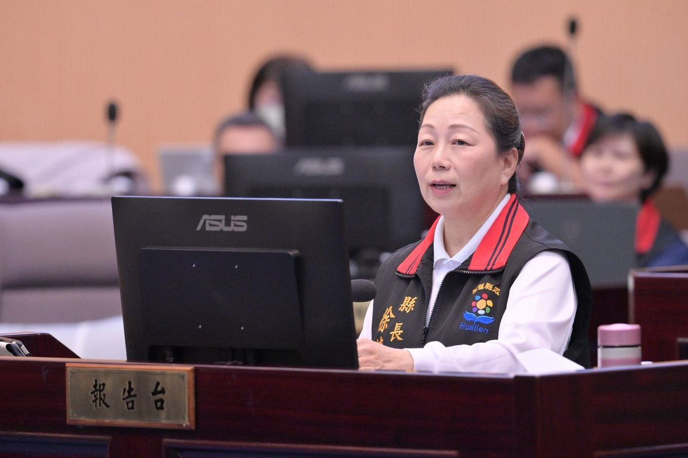

徐榛蔚施政總報告謝議會！八年減債87億厚植全齡建設根基

可樂電子報小編/編輯
花蓮縣長徐榛蔚日前於花蓮縣議會第20屆第8次定期大會，提出任期內最後一次施政總報告。徐縣長感性感謝議會八年來的嚴格監督與理性鞭策，並率領縣府團隊向全體鄉親繳出總結成績單。報告全面回顧八年來從財政穩健減債、交通治水硬體、數位智慧校園到全人社會福利等各項重大建設，強調縣府團隊始終戰戰兢兢、秉持財政紀律，為花蓮未來數十年的長遠繁榮奠定深厚基石。

在財政管理方面，徐縣長指出「地方建設需要長期投入，財政紀律絕不能鬆懈」。面對沉重的歷史債務壓力，縣府團隊堅持開源節流並審慎調配預算，花蓮縣未償債務餘額從民國99年最高峰的133.7億元，自前縣長傅崐萁任內起逐年遞減，至115年8月已降至46.2億元，累計減債達87.5億元、降幅高達六成五。穩健減債不僅減輕下一代負擔，更大幅提升了花蓮推動重大建設與應變天災的財政自主空間。

在基礎工程建設上，縣府八年來鋪設全方位永續路網，全面推動193縣道南北向系統性拓寬、改善高寮大橋災後重建通車與各鄉鎮農路，健全城鄉動脈；治水防災端跨局處推進四大排水系統智慧管網，大幅提升防洪蓄水能力；同時落成東臺灣首座「全民運動館」、累計完工34處部落聚會所與客家文化園區，全面改建警消廳舍耐震結構，實現城鄉風貌的實質蛻變。

在社會福祉軟實力上，縣府實踐「0至120歲全齡全人照顧」，全臺首創0-18歲「零元上學」並擴大延伸托育補助；針對青壯年提供創業貸款利息補貼與孵育基地；長照覆蓋率自112年起達100%榮登全國第一，部落文健站布建達115處同列全國之冠。此外，成功承辦第58屆國際少年運動會（ICG）與世界俱樂部龍舟錦標賽（CCWC），更讓花蓮的城市軟實力驚艷國際舞臺。徐縣長強調，無論未來由誰接棒，花蓮都已在最穩固的基石上自信大步前行。